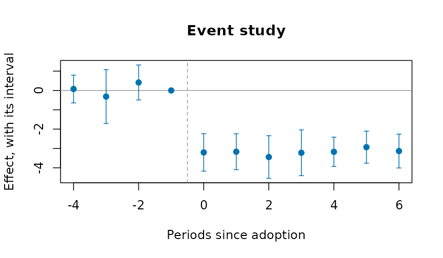
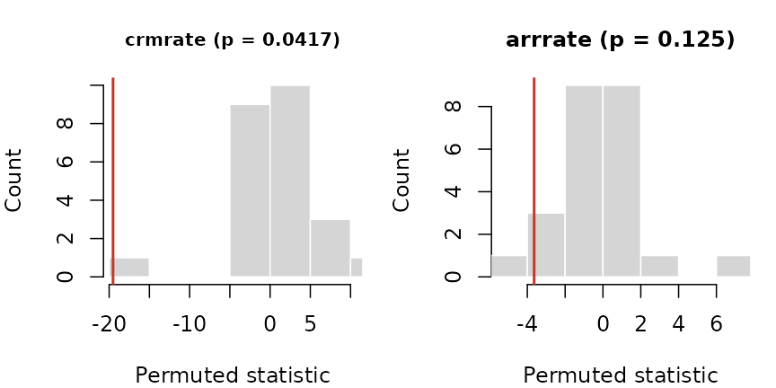
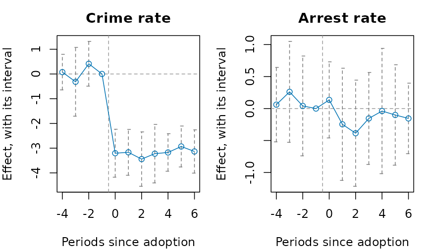
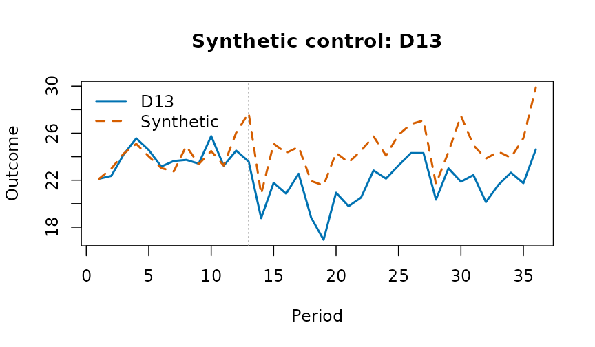
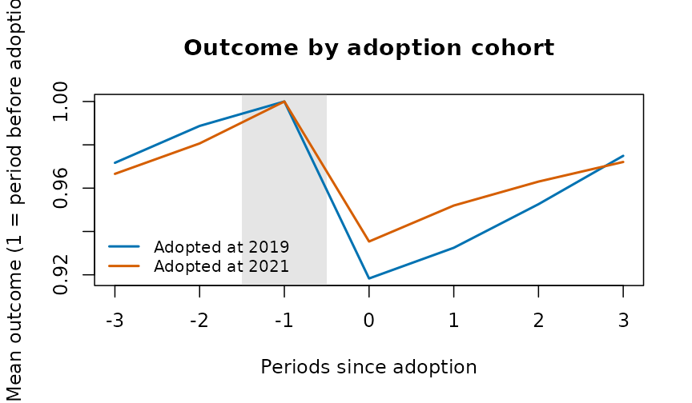
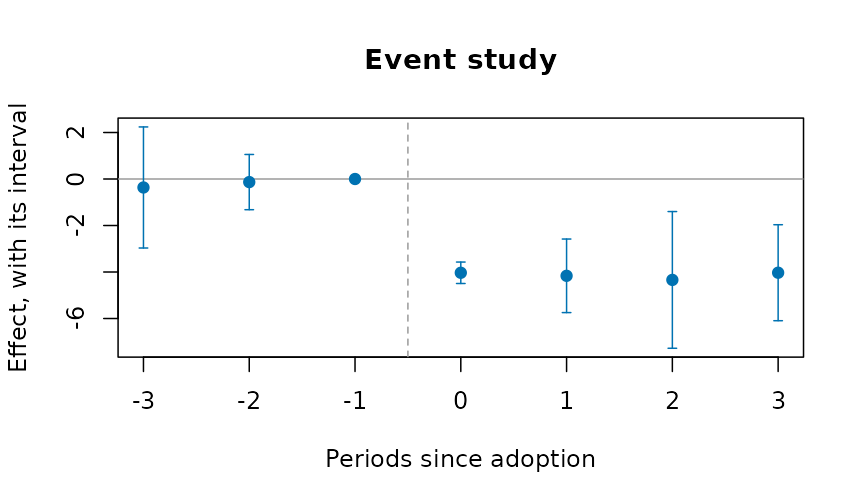

Evaluating a policy from administrative panels
Source:vignettes/policy-evaluation.Rmd
policy-evaluation.RmdA reform reaches some places before others: a new criminal procedure
rolled out district by district, a policing program adopted city by
city, a ward boundary redrawn. Agencies publish the outcomes as counts
or rates by place and period. This vignette covers the designs that turn
such a table into an estimate of the reform’s effect, with honest
uncertainty. Each estimator gives the same answer as the reference
implementation (fixest, did,
bacondecomp) to rounding error, and none of them needs a
package outside base R.
The examples use polex(): twenty districts in four
regions over 36 months, with a reform that reaches the regions in three
stages (months 13, 19 and 25) and never reaches the fourth. The numbers
are made up, with a known effect: the reform lowers the crime rate by
3.
p <- polex()
head(p)
#> district region month refmonth reformed population logpop crimes crmrate
#> 1 D01 R1 1 13 0 152152 11.93264 80 39.732
#> 2 D01 R1 2 13 0 152152 11.93264 56 42.708
#> 3 D01 R1 3 13 0 152152 11.93264 68 41.228
#> 4 D01 R1 4 13 0 152152 11.93264 68 43.296
#> 5 D01 R1 5 13 0 152152 11.93264 62 42.036
#> 6 D01 R1 6 13 0 152152 11.93264 59 40.197
#> arrrate
#> 1 15.394
#> 2 16.387
#> 3 16.043
#> 4 17.148
#> 5 15.443
#> 6 15.568Difference in differences
plndid() fits the two-way fixed-effects regression, with
standard errors clustered by unit (or any coarser grouping), and reports
the effect relative to the comparison units’ mean before the reform:
plndid(p, "district", "month", "crmrate", "reformed")
#> ╭── Difference in differences ────────────────────────────────────────────────╮
#> │ Method fixed-effects least squares, cluster-robust (CR1) errors │
#> │ Observations 720 │
#> │ Clusters 20 │
#> │ Confidence 95% │
#> │ Comparison mean 26.52 │
#> │ Relative effect -12.2% of the comparison mean │
#> │ │
#> │ Estimates │
#> │ term estimate se 95% CI t p_value │
#> │ ------- -------- ------ ---------------- ------ ------- │
#> │ treated -3.232 0.1164 [-3.475, -2.988] -27.76 < 0.001 │
#> │ │
#> │ The policy's effect on the outcome is -3.232 (95% interval [-3.475, │
#> │ -2.988]): the interval excludes 0, so the data distinguish it from no │
#> │ effect. │
#> │ │
#> │ The comparison mean is the pre-period mean outcome of the units not │
#> │ (yet) treated. │
#> ╰─────────────────────────────────────────────────────────────────────────────╯Before any model
cohtrnd() shows each adoption cohort’s outcome around
its adoption, scaled to 1 just before it:

Leads and lags
evstudy() estimates the effect period by period around
adoption. The leads (periods before adoption) should be near zero; the
joint test of that is printed below the table:
es <- evstudy(
p,
"district",
"month",
"crmrate",
"refmonth",
leads = 4,
lags = 6
)
es
#> ╭── Event study ──────────────────────────────────────────────────────────────╮
#> │ Method fixed-effects regression on the periods since │
#> │ adoption │
#> │ Observations 720 │
#> │ Clusters 20 │
#> │ Periods -4 to 6 since adoption │
#> │ Reference period -1 │
#> │ Confidence 95% │
#> │ Leads jointly zero F(3, 19) = 1.263, p = 0.315 │
#> │ │
#> │ evtm estimate se 95% CI t p_value │
#> │ ---- -------- ------ ---------------- ------ ------- │
#> │ -4 0.075 0.3433 [-0.643, 0.794] 0.220 0.828 │
#> │ -3 -0.317 0.6646 [-1.708, 1.074] -0.476 0.639 │
#> │ -2 0.412 0.4327 [-0.493, 1.318] 0.953 0.352 │
#> │ -1 0.000 0.0000 [0.000, 0.000] │
#> │ 0 -3.205 0.4630 [-4.174, -2.235] -6.921 < 0.001 │
#> │ 1 -3.169 0.4427 [-4.095, -2.242] -7.158 < 0.001 │
#> │ 2 -3.443 0.5254 [-4.542, -2.343] -6.552 < 0.001 │
#> │ 3 -3.223 0.5659 [-4.407, -2.038] -5.695 < 0.001 │
#> │ 4 -3.174 0.3626 [-3.933, -2.415] -8.754 < 0.001 │
#> │ 5 -2.933 0.3955 [-3.760, -2.105] -7.416 < 0.001 │
#> │ 6 -3.134 0.4182 [-4.010, -2.259] -7.494 < 0.001 │
#> │ │
#> │ Each row is the effect that many periods from adoption, measured │
#> │ against the reference period. The leads are jointly consistent with │
#> │ zero, the testable part of parallel trends. │
#> ╰─────────────────────────────────────────────────────────────────────────────╯
plot(es)
Staggered adoption
When districts adopt at different times, the two-way estimate uses
districts already treated as controls for later ones.
bacondcmp() shows how much weight those comparisons
get:
b <- bacondcmp(p, "district", "month", "crmrate", "reformed")
tapply(b$weight, b$type, sum)
#> earlier vs later later vs earlier treated vs never
#> 0.2093023 0.2093023 0.5813953
plot(b)
stgatt() avoids them: each cohort is compared only with
districts not yet treated (Callaway and Sant’Anna), or the regression
has a coefficient for every cohort and period (Wooldridge). The
bootstrap resamples whole districts:
s <- stgatt(p, "district", "month", "crmrate", "refmonth", reps = 99, seed = 1)
s$overall
#> estimate se lower upper
#> 1 -2.825844 0.3400471 -3.492324 -2.159364
plot(s)
For a treatment that can switch off as well as on,
swtdid() compares the units that switch with those that do
not, in the period they switch, with a placebo one period earlier:
swtdid(p, "district", "month", "crmrate", "reformed", reps = 99, seed = 1)
#> ╭── Difference in differences, switching treatment ──────────────────────╮
#> │ Method de Chaisemartin and D'Haultfoeuille, switchers vs stayers │
#> │ Switchers 15 │
#> │ │
#> │ term estimate se interval switchers │
#> │ ------- -------- ------ ---------------- --------- │
#> │ effect -3.135 0.4556 [-4.028, -2.243] 15 │
#> │ placebo -0.517 0.4430 [-1.385, 0.351] 15 │
#> │ │
#> │ At the moment units switch, the effect is -3.135 (its interval │
#> │ [-4.028, -2.243]): the interval excludes 0, so the data distinguish │
#> │ it from no effect. The placebo, the same comparison one period │
#> │ earlier, is -0.5169; near zero supports the design. │
#> │ │
#> │ Intervals are normal, from the cluster-bootstrap standard error. │
#> ╰────────────────────────────────────────────────────────────────────────╯Inference from the assignment
With four regions there are only 24 ways to assign the three stages
and the never-treated region. perminf() tries every one,
and gives the share at least as extreme as the real assignment. With two
outcomes it also gives Westfall and Young’s stepdown p-values, which
hold the chance of any false positive at the nominal level:
r <- perminf(p, "district", "month", c("crmrate", "arrrate"), "refmonth",
cl = "region")
r
#> ╭── Permutation inference ───────────────────────────────────────────────╮
#> │ Method randomisation inference on the adoption dates │
#> │ Assignments 24 │
#> │ Draws every assignment (exact) │
#> │ Outcomes 2 │
#> │ │
#> │ outcome estimate statistic p_value stepdown_p │
#> │ ------- -------- --------- ------- ---------- │
#> │ crmrate -3.232 -19.52 0.042 0.042 │
#> │ arrrate -0.214 -3.64 0.125 0.125 │
#> │ │
#> │ The p-value is the share of reassigned adoption dates that give a │
#> │ statistic at least as extreme as the one observed; it needs no model │
#> │ of the errors. The stepdown p-values (Westfall and Young) hold for │
#> │ all the outcomes tested together. │
#> ╰────────────────────────────────────────────────────────────────────────╯
plot(r, type = "histogram")
loounit() checks that no single district drives the
estimate:

Several outcomes at once, in the style of a Stata event-study figure:
plotevgrid(
list(
"Crime rate" = es,
"Arrest rate" = evstudy(
p,
"district",
"month",
"arrrate",
"refmonth",
leads = 4,
lags = 6
)
),
style = "stata"
)
Counts
For counts, plnpois() gives the effect as a rate ratio,
with the population as exposure:
plnpois(p, "district", "month", "crimes", "reformed", offset = "logpop")
#> ╭── Fixed-effects count model ────────────────────────────────────────────╮
#> │ Model Poisson │
#> │ Fixed effects unit and period │
#> │ Observations 720 │
#> │ Clusters 20 │
#> │ │
#> │ term estimate se rate_ratio interval p_value │
#> │ ------- -------- ------- ---------- ---------------- ------- │
#> │ treated -0.09215 0.02221 0.9120 [0.8731, 0.9525] < 0.001 │
#> │ │
#> │ Under the policy the expected count is multiplied by 0.912 (its │
#> │ interval [0.8731, 0.9525]): the interval excludes 1, so the data │
#> │ distinguish it from no effect. A ratio of 0.912 is a 8.8% fall. │
#> │ │
#> │ The estimate is on the log scale; the interval is for the rate ratio. │
#> ╰─────────────────────────────────────────────────────────────────────────╯One treated place
synctl() builds a weighted average of untreated places
that tracks the treated one before the reform, and runs the same method
on each untreated place as a placebo:
p13 <- p[is.na(p$refmonth) | p$district == "D13", ]
sc <- synctl(p13, "district", "month", "crmrate", "D13", adopt = 13)
sc
#> ╭── Synthetic control ────────────────────────────────────────────────────╮
#> │ Treated unit D13 │
#> │ Adoption 13 │
#> │ Donors 5 │
#> │ Donors with weight 4 │
#> │ Pre-period RMSPE 0.7638 │
#> │ Mean gap after -3.107 │
#> │ Post/pre RMSPE ratio 4.327 │
#> │ Placebo-in-space p 0.167 │
#> │ Placebos 5 │
#> │ │
#> │ Donor weights │
#> │ donor weight │
#> │ ----- ------ │
#> │ D12 0.4082 │
#> │ D04 0.3761 │
#> │ D20 0.1846 │
#> │ D16 0.0311 │
#> │ │
#> │ The synthetic D13 is the weighted mix of donors that best tracks it │
#> │ before adoption. After adoption the treated unit is on average -3.107 │
#> │ away from it. Ranked against every donor run as a placebo, its │
#> │ post/pre ratio gives p = 0.167. │
#> ╰─────────────────────────────────────────────────────────────────────────╯
plot(sc)
Measures for justice data
Three measures prepare the outcomes these designs take:
-
sevidx()combines offence rates, weighted by each offence’s severity (for example its mean statutory sentence); -
piperate()gives the rate at which one stage of the justice process follows another, with the input’s window set before the outcome’s, because cases take time; -
cmlrisk()gives the chance of a first arrest (or conviction, or placement) by each age, from first events and the population.
For place-based designs, bufasgn() marks places near a
site as treated, places near a comparison point and far from every site
as the comparison, and excludes the rest.
d <- data.frame(
city = rep(c("A", "B"), each = 3),
year = 2024,
offence = rep(c("homicide", "robbery", "burglary"), 2),
n = c(5, 120, 300, 2, 90, 410),
pop = rep(c(250000, 180000), each = 3),
stringsAsFactors = FALSE
)
sevidx(
d,
"city",
"year",
"offence",
"n",
w = c(homicide = 25, robbery = 8, burglary = 4),
pop = "pop"
)
#> ╭── Severity-weighted index ──────────────────────────────────────────────╮
#> │ Rows 2 │
#> │ Units 2 │
#> │ Periods 1 │
#> │ Offences weighted 3 │
#> │ │
#> │ Index │
#> │ unit time unweighted weighted │
#> │ ---- ----- ---------- -------- │
#> │ A 2,024 170.0 914 │
#> │ B 2,024 278.9 1,339 │
#> │ │
#> │ Weights │
#> │ offence weight │
#> │ -------- ------ │
#> │ homicide 25 │
#> │ robbery 8 │
#> │ burglary 4 │
#> │ │
#> │ The weighted index adds each offence's count (or rate) times its │
#> │ severity weight; beside the unweighted total it shows whether the mix │
#> │ of offences moved, not only their number. │
#> ╰─────────────────────────────────────────────────────────────────────────╯
cmlrisk(16:20, c(900, 1400, 1700, 1600, 1400), rep(1e5, 5))
#> ╭── Cumulative risk of a first event ───────────────────────────────────╮
#> │ Ages 16 to 20 │
#> │ Risk by the last age 7% [6.84, 7.16] │
#> │ │
#> │ age hazard atrisk cumrisk interval │
#> │ --- ------- ------- ------- ------------------ │
#> │ 16 0.00900 100,000 0.00900 [0.00841, 0.00959] │
#> │ 17 0.01413 99,100 0.02300 [0.02207, 0.02393] │
#> │ 18 0.01740 97,700 0.04000 [0.03878, 0.04121] │
#> │ 19 0.01667 96,000 0.05600 [0.05457, 0.05742] │
#> │ 20 0.01483 94,400 0.07000 [0.06842, 0.07158] │
#> │ │
#> │ By age 20 an estimated 7% of the population have had a first event, │
#> │ from the age-specific first-event hazards of a life table. │
#> ╰───────────────────────────────────────────────────────────────────────╯Doing better than the original designs
Published applications of these designs often share a few weaknesses, and each has a remedy here.
Few clusters. A reform assigned to a handful of
districts gives cluster-robust tests that reject too often.
wcb() gives an honest p-value and interval; with four
clusters it says plainly that nothing can be rejected at 5%:
wcb(p, "district", "month", "crmrate", "reformed", cl = "region")
#> ╭── Wild cluster bootstrap ─────────────────────────────────────────────╮
#> │ Method wild cluster bootstrap-t, null imposed │
#> │ Clusters 4 │
#> │ Draws 16 │
#> │ Weights every sign pattern (exact) │
#> │ │
#> │ estimate interval t p_value │
#> │ -------- ----------- ------ ------- │
#> │ -3.232 [-Inf, Inf] -19.52 0.125 │
#> │ │
#> │ The treatment's effect is -3.232 (its interval [-Inf, Inf]): the │
#> │ interval includes 0, so the data cannot rule out no effect. │
#> │ │
#> │ With so few clusters no value can be rejected at this level, so the │
#> │ interval is the whole line. │
#> ╰───────────────────────────────────────────────────────────────────────╯Doubts about parallel trends. tse()
asks how large a departure from parallel trends, relative to the largest
seen before adoption, would make the effect vanish:
tse(es, seed = 1)
#> ╭── Sensitivity to parallel trends ──────────────────────────────────────╮
#> │ Method relative magnitudes (Rambachan and Roth) │
#> │ Target average post-period effect │
#> │ Breakdown Mbar = 0.4678 │
#> │ Robust interval level 95% │
#> │ │
#> │ mbar identified_set robust_interval │
#> │ ----- ---------------- ---------------- │
#> │ 0.000 [-3.183, -3.183] [-3.938, -2.411] │
#> │ 0.500 [-4.641, -1.725] [-6.987, 0.190] │
#> │ 1.000 [-6.099, -0.267] [-10.199, 3.353] │
#> │ 1.500 [-7.557, 1.192] [-13.461, 6.621] │
#> │ 2.000 [-9.015, 2.650] [-16.729, 9.828] │
#> │ │
#> │ The negative effect stays clear of zero while the trend after │
#> │ adoption departs from parallel by up to 0.468 times the largest │
#> │ departure before it. A departure as large as the pre-period's (Mbar │
#> │ 1) is enough to lose it: the conclusion leans on parallel trends. │
#> │ │
#> │ Mbar bounds how far the trend after adoption may depart from │
#> │ parallel, as a multiple of the largest departure seen before it; the │
#> │ effect is distinguishable from zero until the robust interval first │
#> │ includes 0, at the breakdown value. │
#> ╰────────────────────────────────────────────────────────────────────────╯Covariates that differ between groups.
stgatt() with covs is doubly robust (use
covariates fixed before treatment: one the reform moves, such as
arrests, is a bad control). plndml() lets a machine learner
fit the confounding with fixed effects, and mtchdid()
matches units on their pre-reform paths before differencing:
set.seed(4)
p$x1 <- rnorm(20)[match(p$district, unique(p$district))]
stgatt(p, "district", "month", "crmrate", "refmonth", covs = "x1", reps = 49,
seed = 1)$overall
#> estimate se lower upper
#> 1 -2.459345 0.691214 -3.8141 -1.10459
m <- mtchdid(p, "district", "month", "crmrate", "refmonth", ratio = 2)
m$estimate
#> ╭── Difference in differences ────────────────────────────────────────────────╮
#> │ Method fixed-effects least squares, cluster-robust (CR1) errors │
#> │ Observations 720 │
#> │ Clusters 20 │
#> │ Confidence 95% │
#> │ Comparison mean 26.3 │
#> │ Relative effect -11.7% of the comparison mean │
#> │ │
#> │ Estimates │
#> │ term estimate se 95% CI t p_value │
#> │ ------- -------- ------ ---------------- ------ ------- │
#> │ treated -3.081 0.1208 [-3.334, -2.829] -25.51 < 0.001 │
#> │ │
#> │ The policy's effect on the outcome is -3.081 (95% interval [-3.334, │
#> │ -2.829]): the interval excludes 0, so the data distinguish it from no │
#> │ effect. │
#> │ │
#> │ The comparison mean is the pre-period mean outcome of the units not │
#> │ (yet) treated. │
#> ╰─────────────────────────────────────────────────────────────────────────────╯A single treated place, or a few.
syndid() weights both comparison units and pre-periods:
sd <- syndid(
p13,
"district",
"month",
"crmrate",
"refmonth",
reps = 50,
seed = 1
)
sd
#> ╭── Synthetic difference in differences ─────────────────────────────────╮
#> │ Estimate -2.886 │
#> │ Standard error 0.5927 (placebo) │
#> │ Interval [-4.047, -1.724] │
#> │ Adoption 13 │
#> │ Comparison units 5 │
#> │ With weight 5 │
#> │ Pre-periods weighted 12 │
#> │ │
#> │ Unit weights │
#> │ unit weight │
#> │ ---- ------ │
#> │ D12 0.2072 │
#> │ D20 0.2027 │
#> │ D04 0.2007 │
#> │ D16 0.1948 │
#> │ D08 0.1945 │
#> │ │
#> │ Weighting the comparison units and the pre-periods to match the │
#> │ treated units, the effect is -2.886 (its interval [-4.047, -1.724]): │
#> │ the interval excludes 0, so the data distinguish it from no effect. │
#> ╰────────────────────────────────────────────────────────────────────────╯
plot(sd)
Null results without a measure of power.
plnpwr() simulates the design on the untreated data and
gives the minimum detectable effect:
pw <- plnpwr(p[p$month <= 12, ], "district", "month", "crmrate", ntrt = 10,
adopt = 7:10, eff = c(0, 0.5, 1, 1.5), reps = 40, seed = 1)
pw
#> ╭── Power of the design ──────────────────────────────────────────────────╮
#> │ Method placebo adoptions on the panel itself │
#> │ Alpha 0.05 │
#> │ Size (no effect) 0.05 │
#> │ Minimum detectable effect 0.8095 │
#> │ │
#> │ effect power │
#> │ ------ ----- │
#> │ 0.00 0.050 │
#> │ 0.50 0.475 │
#> │ 1.00 1.000 │
#> │ 1.50 1.000 │
#> │ │
#> │ Power is the share of simulated adoptions, with the effect added, in │
#> │ which the test rejects no effect; the size, at an effect of 0, should │
#> │ be close to alpha. │
#> ╰─────────────────────────────────────────────────────────────────────────╯
plot(pw)
Your own panel, step by step
Every estimator takes a data frame with one row per unit and period and the names of its columns, so your own data need only that layout. Here eight towns over ten years, four of them adopting a by-law (two in 2019, two in 2021), typed in:
own <- data.frame(
town = rep(c("A", "B", "C", "D", "E", "F", "G", "H"), each = 10),
year = rep(2015:2024, times = 8),
stringsAsFactors = FALSE
)
i <- match(own$town, unique(own$town))
own$first <- c(2019, 2019, 2021, 2021, NA, NA, NA, NA)[i]
own$bylaw <- as.integer(!is.na(own$first) & own$year >= own$first)
own$pop <- c(12, 30, 8, 22, 15, 40, 9, 18)[i] * 1000
own$county <- rep(c("North", "South"), 4)[i]
own$income <- 50 + own$year - 2015 + cos(seq_len(80))
own$rate <- 30 + i + 0.5 * (own$year - 2015) - 4 * own$bylaw +
0.2 * own$income + sin(seq_len(80))
head(own)
#> town year first bylaw pop county income rate
#> 1 A 2015 2019 0 12000 North 50.54030 41.94953
#> 2 A 2016 2019 0 12000 North 50.58385 42.52607
#> 3 A 2017 2019 0 12000 North 51.01001 42.34312
#> 4 A 2018 2019 0 12000 North 52.34636 42.21247
#> 5 A 2019 2019 1 12000 North 54.28366 38.89781
#> 6 A 2020 2019 1 12000 North 55.96017 40.41262The arguments name the columns:
-
unitandtime: the unit ("town") and the period, a number ("year"; a month index or a date turned into a number works the same); -
y: the outcome ("rate"); - the treatment, in one of two forms:
trtd, a 0/1 column that is 1 in the periods a unit is treated ("bylaw", forplndid(),wcb(),bacondcmp(),swtdid(),loounit()), orftreat, the period a unit is first treated,NAfor a unit never treated ("first", forevstudy(),stgatt(),perminf(),mtchdid(),syndid(),cohtrnd()); -
covs: covariate columns ("income"); -
cl: the cluster column for the standard errors (default the unit;"county"if the by-law was assigned by county); -
w: a weight column ("pop"), andconflvlthe confidence level.
1. Look first. Each cohort’s outcome around its adoption:

2. The effect. The two-way fixed-effects estimate, with income as a control, weighted by population, at a 90% level:
plndid(own, "town", "year", "rate", "bylaw", covs = "income", w = "pop",
conflvl = 0.9)
#> ╭── Difference in differences ────────────────────────────────────────────────╮
#> │ Method fixed-effects least squares, cluster-robust (CR1) errors │
#> │ Observations 80 │
#> │ Clusters 8 │
#> │ Confidence 90% │
#> │ Comparison mean 47.43 │
#> │ Relative effect -8.3% of the comparison mean │
#> │ │
#> │ Estimates │
#> │ term estimate se 90% CI t p_value │
#> │ ------- -------- ------ ---------------- ------ ------- │
#> │ treated -3.914 0.1702 [-4.236, -3.591] -22.99 < 0.001 │
#> │ income 0.227 0.0367 [0.157, 0.296] 6.17 < 0.001 │
#> │ │
#> │ The policy's effect on the outcome is -3.914 (90% interval [-4.236, │
#> │ -3.591]): the interval excludes 0, so the data distinguish it from no │
#> │ effect. │
#> │ │
#> │ The comparison mean is the pre-period mean outcome of the units not │
#> │ (yet) treated. │
#> ╰─────────────────────────────────────────────────────────────────────────────╯3. Period by period. The event study, and its sensitivity to parallel trends:
es <- evstudy(own, "town", "year", "rate", "first", leads = 3, lags = 3,
covs = "income", w = "pop")
plot(es)
tse(es, seed = 1)
#> ╭── Sensitivity to parallel trends ──────────────────────────────────────╮
#> │ Method relative magnitudes (Rambachan and Roth) │
#> │ Target average post-period effect │
#> │ Breakdown Mbar = 0.9828 │
#> │ Robust interval level 95% │
#> │ │
#> │ mbar identified_set robust_interval │
#> │ ----- ---------------- ---------------- │
#> │ 0.000 [-4.142, -4.142] [-5.592, -2.677] │
#> │ 0.500 [-4.431, -3.852] [-7.555, -1.323] │
#> │ 1.000 [-4.721, -3.563] [-9.540, 0.051] │
#> │ 1.500 [-5.010, -3.273] [-11.505, 1.636] │
#> │ 2.000 [-5.300, -2.984] [-13.486, 3.452] │
#> │ │
#> │ The negative effect stays clear of zero while the trend after │
#> │ adoption departs from parallel by up to 0.983 times the largest │
#> │ departure before it. A departure as large as the pre-period's (Mbar │
#> │ 1) is enough to lose it: the conclusion leans on parallel trends. │
#> │ │
#> │ Mbar bounds how far the trend after adoption may depart from │
#> │ parallel, as a multiple of the largest departure seen before it; the │
#> │ effect is distinguishable from zero until the robust interval first │
#> │ includes 0, at the breakdown value. │
#> ╰────────────────────────────────────────────────────────────────────────╯4. Staggered adoption. Each cohort against the towns not yet treated:
stgatt(own, "town", "year", "rate", "first", reps = 49, seed = 1)$overall
#> estimate se lower upper
#> 1 -3.89384 0.8365213 -5.533391 -2.2542885. Honest inference with few clusters. With eight towns, the wild cluster bootstrap and the permutation test:
wcb(own, "town", "year", "rate", "bylaw", covs = "income")
#> ╭── Wild cluster bootstrap ───────────────────────────────────────────────╮
#> │ Method wild cluster bootstrap-t, null imposed │
#> │ Clusters 8 │
#> │ Draws 256 │
#> │ Weights every sign pattern (exact) │
#> │ │
#> │ estimate interval t p_value │
#> │ -------- ---------------- ------ ------- │
#> │ -4.022 [-4.482, -3.521] -18.70 0.008 │
#> │ │
#> │ The treatment's effect is -4.022 (its interval [-4.482, -3.521]): the │
#> │ interval excludes 0, so the data distinguish it from no effect. │
#> ╰─────────────────────────────────────────────────────────────────────────╯
perminf(own, "town", "year", "rate", "first", reps = 99, seed = 1)
#> ╭── Permutation inference ───────────────────────────────────────────────╮
#> │ Method randomisation inference on the adoption dates │
#> │ Assignments 99 │
#> │ Draws random draws │
#> │ Outcomes 1 │
#> │ │
#> │ outcome estimate statistic p_value stepdown_p │
#> │ ------- -------- --------- ------- ---------- │
#> │ rate -4.039 -16.86 0.010 0.010 │
#> │ │
#> │ The p-value is the share of reassigned adoption dates that give a │
#> │ statistic at least as extreme as the one observed; it needs no model │
#> │ of the errors. │
#> ╰────────────────────────────────────────────────────────────────────────╯Indigenous examples
The methods here need a panel: units observed over time, some treated at a known date. The bundled Indigenous tables are repeated cross-sections of published estimates, so the before-and-after comparison they support is the change in a gap, with its interval:
hi <- indiex("health")
x <- hi[hi$age == "Total, 18 years and over" &
hi$indicator == "Perceived mental health, very good or excellent", ]
gaps <- do.call(rbind, lapply(split(x, x$period), function(p) {
cbind(period = p$period[1],
indgap(p, "group", "estimate", "lower", "upper")[
, c("group", "difference", "diflo", "difup")])
}))
rownames(gaps) <- NULL
gaps
#> period group difference diflo difup
#> 1 2015/2018 First Nations -10.8 -13.23311 -8.366895
#> 2 2015/2018 Métis -9.6 -12.03311 -7.166895
#> 3 2015/2018 Inuit -21.5 -27.31378 -15.686223
#> 4 2019/2022 First Nations -15.7 -18.53593 -12.864070
#> 5 2019/2022 Métis -8.7 -11.58531 -5.814692
#> 6 2019/2022 Inuit -13.7 -20.16568 -7.234321Perceived mental health fell for every group between the two cycles; whether the gaps moved is read from the intervals, not the point estimates.
Acknowledgements
These designs are those of the empirical work of Professor Angela Zorro Medina (University of Toronto) on criminal-procedure reform, political dynasties, police stops and the cumulative risk of criminal justice outcomes. The estimators themselves are the standard ones of the literature cited on each help page.
References
- Abadie A, Diamond A, Hainmueller J (2010). Synthetic control methods for comparative case studies. Journal of the American Statistical Association 105(490):493-505.
- Acosta C, Mejia D, Zorro Medina A (2023). On the tension between due process protection and public safety: the case of an extensive procedural reform in Colombia. SSRN 10.2139/ssrn.4585682.
- Callaway B, Sant’Anna PHC (2021). Difference-in-differences with multiple time periods. Journal of Econometrics 225(2):200-230.
- de Chaisemartin C, D’Haultfoeuille X (2020). Two-way fixed effects estimators with heterogeneous treatment effects. American Economic Review 110(9):2964-2996.
- Goodman-Bacon A (2021). Difference-in-differences with variation in treatment timing. Journal of Econometrics 225(2):254-277.
- Hepburn P, Kohler-Hausmann I, Zorro Medina A (2019). Cumulative risks of multiple criminal justice outcomes in New York City. Demography 56(3):1161-1171.
- Ternullo S, Zorro-Medina A, Vargas R (2024). How political dynasties concentrate advantage within cities. Social Forces 102(4):1310-1331.
- Westfall PH, Young SS (1993). Resampling-Based Multiple Testing. Wiley.
- Wooldridge JM (2021). Two-way fixed effects, the two-way Mundlak regression, and difference-in-differences estimators. SSRN 10.2139/ssrn.3906345.
- Zorro Medina A, Hackett D, Green D, Vargas R (2025). Evidence of donor bias in Chicago police stops. arXiv:2504.15140.